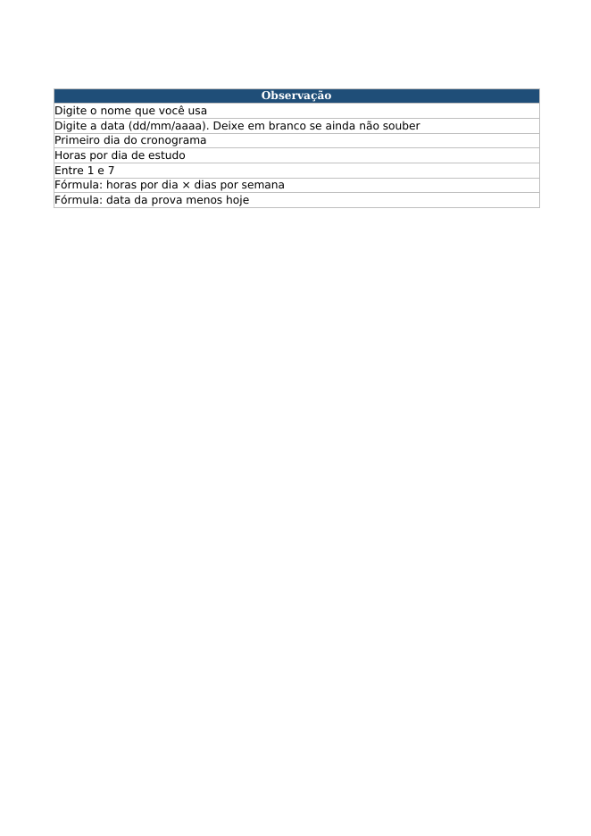

Planilha de estudo para concurso (cronograma e revisão espaçada)

Planilha em PDF para imprimir ou ver no celular, com cronograma semanal de 12 semanas, horas por disciplina e revisões nos dias +1, +7, +15 e +30. Arquivo estático, não editável.
R$ 19,90
Preço: R$ 19,90, pagamento único. Compra e acesso: https://pay.kiwify.com.br/2Rfm393
Para quem é
Para quem está estudando para concurso público e quer organizar o tempo sem depender de aplicativo: a pessoa que tem o edital, sabe mais ou menos quantas horas por dia pode estudar e perde o controle do que já revisou.
O problema
Com muitas disciplinas e um edital longo, é comum estudar um assunto uma vez e não voltar a ele. Sem registro, o cronograma vira uma lista de intenções: não se sabe quanto do edital já foi visto, o que está para revisar e quanto tempo sobra por semana para cada matéria.
O que vem dentro (arquivo PDF: planilha-estudo-concurso-cronograma-revisao.pdf, 6 páginas, para imprimir ou ver no celular)
- Página 1, Como usar: o passo a passo, a regra da revisão espaçada e os limites do método.
- Página 2, Parâmetros: nome do concurso, data da prova, início do estudo, horas por dia e dias por semana, com o total de horas por semana.
- Página 3, Disciplinas: disciplinas com peso de 1 a 5, horas por semana de cada uma, tópicos cadastrados e percentual estudado.
- Página 4, Tópicos: a lista de tópicos com a data do primeiro estudo, as datas de revisão nos dias +1, +7, +15 e +30 e a próxima revisão.
- Página 5, Cronograma: 12 semanas, com as horas de cada disciplina por semana.
- Página 6, Resumo: tópicos estudados, percentual do edital estudado, revisões de hoje, revisões atrasadas e revisões concluídas.
O PDF traz um exemplo já calculado: concurso fictício, início em 19/10/2026, 2 horas por dia, 5 dias por semana, 4 disciplinas e 7 tópicos. Os números são os do exemplo.
Como usar
- Abra o PDF no computador ou no celular, ou imprima as páginas que precisar.
- Leia a página 1 uma vez para entender a regra: a revisão cai em +1, +7, +15 e +30 dias depois do primeiro estudo.
- Veja na página 2 como as horas por semana saem de horas por dia × dias por semana, e na página 3 como essas horas se dividem entre as disciplinas pelo peso.
- Use a página 4 para ver como cada tópico ganha suas datas de revisão e a página 5 para ver o cronograma das 12 semanas.
- Para o seu concurso, refaça as contas no caderno ou numa planilha sua, com a mesma regra. O PDF não recalcula nem aceita digitação.
Preço
R$ 19,90, pagamento único. Acesso ao arquivo em PDF (6 páginas).
O que a planilha NÃO faz
- Não é editável: o PDF não aceita digitação e não recalcula. Para o seu concurso, você faz as contas por fora.
- Não tem o edital, o conteúdo das disciplinas nem questões de prova. Você escolhe os tópicos.
- Não marca revisões feitas, não atualiza datas e não avisa o que revisar no dia em que você abre o arquivo. Os quadros mostram a data de referência do exemplo.
- Não envia lembretes, não se conecta a aplicativo de agenda e não tem macros.
- Não garante aprovação, nota ou classificação. O resultado depende do que você estuda de fato.
Perguntas frequentes
Preciso saber Excel? Não. O arquivo é um PDF para imprimir ou ler na tela. Posso preencher no PDF? Não. Para anotar, use caneta no papel impresso ou o seu caderno. A planilha me diz o que estudar? Não. Ela mostra como organizar o que você escolher estudar e quando revisar. O conteúdo vem do seu edital. Serve para qualquer concurso? A regra de cronograma e revisão vale para qualquer concurso; você aplica os tópicos do edital que vai prestar. Posso usar no celular? Sim, o PDF abre no celular. Para imprimir, escolha as páginas que precisar. Garante aprovação? Não. Ela ajuda a organizar a rotina de estudo; a aprovação depende de muitos fatores, inclusive do seu estudo.
R$ 19,90